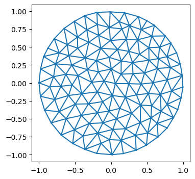

import numpy as np
from scipy import sparse, optimize
import matplotlib.pyplot as plt
from matplotlib import colors as mcolors
import meshplot
from functools import partial
from tqdm.notebook import tqdmTutorial: Membrane mechanics
This tutorial uses triangulax to study the mechanics of membranes. We numerically represent a membrane as a triangular mesh, and finds its mechanically balanced configuration by energy minimization, using automatic differentiation to calculate energy gradients.
import jax.numpy as jnp
import jaxjax.config.update("jax_enable_x64", True)
jax.config.update("jax_debug_nans", True)import lineax
import optimistixfrom triangulax import geometry as geom
from triangulax import adjacency as adj
from triangulax import linops as lin
from triangulax.triangular import TriMesh
from triangulax.mesh import HeMesh, GeomMesh
from triangulax import linopsMinimal surfaces
As a first example, let’s consider a membrane \(\mathcal{M}\) whose energy is dominated by surface tension, so the energy is proportional to the membrane area \(E_A = \int_{\mathcal{M}} dA\). Note that moving vertices within the plane of the mesh does not change the total area/energy (physically, this is because membranes are fluid in-plane, rather than thin elastic sheets). This has important numerical consequences: we will want to arrange the mesh vertices so as to avoid a highly distorted mesh with very stretched triangles.
A nice algorithm by Pinkall and Poitier takes care of this problem. It uses the discretized Laplacian which we already used in the previous notebook for the heat equation. The idea is that to minimize the area, the position of a vertex \(\mathbf{v}_i\) should be equal to the (geometry-weighted) average of its neighbors, and therefore \(\Delta \mathbf{v}_i = 0\). The resulting iterative algorithm works as follows.
- Given the vertex-positions \(\mathbf{v}_i^{(t)}\) at step \(t\), compute the cotan-Laplacian matrix \(\Delta^{(t)}_{ij}\)
- Solve \(\Delta^{(t)}_{ij} \cdot \mathbf{v}_i^{(t+1)} =0\), subject to fixed boundary conditions.
# let's load a simple test mesh
trimesh = TriMesh.read_obj("../test_meshes/disk.obj", dim=3)
hemesh = HeMesh.from_triangles(trimesh.vertices.shape[0], trimesh.faces)
fig = plt.figure(figsize=(4,4))
plt.triplot(*trimesh.vertices[:,:2].T, trimesh.faces)
plt.axis("equal");Warning: readOBJ() ignored non-comment line 3:
o flat_tri_ecmc
# let's impose some boundary conditions on the disk mesh - think of this as finding the shape of a "soap film"
# with a given boundary curve.
bdry_verts = np.where(hemesh.is_bdry)[0]
interior_verts = np.where(~hemesh.is_bdry)[0]
phi_bdry = np.atan2(*trimesh.vertices[bdry_verts, :2].T)
h = 0.5*np.sin(2*phi_bdry)
bdry_pos = np.array(trimesh.vertices[bdry_verts, :])
bdry_pos[:, -1] = h
vertices_bdry_imposed = np.copy(trimesh.vertices)
vertices_bdry_imposed[bdry_verts] = bdry_pos# the non-optimized membrane is pretty creased
meshplot.plot(vertices_bdry_imposed, hemesh.faces, shading={"wireframe":False}, return_plot=True)<meshplot.Viewer.Viewer at 0x36120da90># compute the area of the initial configuration - this is the energy we will minimize
initial_area = geom.get_triangle_areas(vertices_bdry_imposed, hemesh).sum()
print(f"Initial area: {initial_area:.4f}")Initial area: 4.3650# let's check the cotan-Laplacian gives us the area via A = 1/2 * v^T L v, where v are the vertex positions
L = linops.cotan_laplace_sparse(vertices_bdry_imposed, hemesh)
area_L = jnp.diag(vertices_bdry_imposed.T.dot(L @ vertices_bdry_imposed)).sum() /2
print(f"Initial area from Laplace operator: {area_L:.4f}")Initial area from Laplace operator: -4.3650# Let's use the iterative Pinkall-Poitier method to find the mininum energy configuration.
vertices_iterated = [np.copy(vertices_bdry_imposed)]
for t in range(10):
L = linops.bcoo_to_scipy(linops.cotan_laplace_sparse(vertices_iterated[-1], hemesh)) # compute Laplace matrix
# impose boundary conditions by splitting the Laplace matrix into interior and boundary vertices
L_ii = L[interior_verts, :][:, interior_verts]
L_ib = L[interior_verts, :][:, bdry_verts]
bcs = vertices_bdry_imposed[bdry_verts,:]
new_vertices = np.zeros_like(vertices_iterated[-1])
new_vertices[bdry_verts] = bcs
solution = np.stack([sparse.linalg.spsolve(-L_ii, L_ib.dot(bc)) for bc in bcs.T], axis=-1) # iterate over x/y/z coordinates
new_vertices[interior_verts] = solution
vertices_iterated.append(new_vertices)# as a result of the optimization, we get an area-minimizing "Pringles" surface
meshplot.plot(vertices_iterated[-1], hemesh.faces, shading={"wireframe":True}, return_plot=True)<meshplot.Viewer.Viewer at 0x3709439d0>final_area = geom.get_triangle_areas(vertices_iterated[-1], hemesh).sum()
print(f"Initial area: {initial_area:.4f}", f"Final area: {final_area:.4f}")Initial area: 4.3650 Final area: 3.7981# the gradient of the area is very small after optimization:
def get_area(vertices, hemesh):
return geom.get_triangle_areas(vertices, hemesh).sum()
(jnp.linalg.norm(jax.grad(get_area)(vertices_iterated[0], hemesh), axis=-1)[interior_verts].mean(),
jnp.linalg.norm(jax.grad(get_area)(vertices_iterated[-1], hemesh), axis=-1)[interior_verts].mean())(Array(0.06015605, dtype=float64), Array(0.00068703, dtype=float64))Helfrich energy
Next, let’s consider a membrane for which the surface tension is negligible. This is the case for many of the lipid bilayer membranes that make up the cell and its interior organelles. Instead, the energy is dominated by bending.
The Helfrich energy is an elegant, geometric model of bending energy. It uses the mean and Gaussian curvatures \(H, K\) of the surface \(\mathcal{M}\) (see wikipedia, and Crane, Chpt. 5 for how to discretize \(H, K\) on a triangular mesh). The energy reads:
\[E_H =\int dA \left( \frac{\kappa_H}{2}(H-H_0)^2 + \kappa_G K \right) \]
If the surface is closed, the \(\int K\)-term is a topological invariant and can be dropped (and we will do so here). A nonzero spontaneous curvature \(H_0\) means that the membrane “prefers” to be curved; this can result, for instance, from molecules that bind to the membrane.
The exact mean curvature can be computed from the Laplace operator, applied to the vertex positions \(\mathbf{v}\) as \(\Delta\mathbf{v} = 2H\mathbf{n}\), where \(\mathbf{n}\) is the surface normal. However, to compute the curvature \(H\) numerically, we use the dihedral angles \(\theta_{ij}\) of each edge \(ij\): the angles between the normal vectors of adjacent triangles. The mean curvature at vertex \(i\) can be approximated by \[H_i = \frac{1}{4a_i} \sum_{j\sim i} \ell_{ij} \theta_{ij} \] where the sum is over all \(j\) neighboring \(i\), and \(a_i\) is the (Voronoi) area around vertex \(i\).
# let's load a sphere as a test mesh for the Helfrich energy
trimesh = TriMesh.read_obj("../test_meshes/sphere.obj", dim=3)
hemesh = HeMesh.from_triangles(trimesh.vertices.shape[0], trimesh.faces)Warning: readOBJ() ignored non-comment line 3:
o Icospheremeshplot.plot(trimesh.vertices, hemesh.faces, shading={"wireframe":True})<meshplot.Viewer.Viewer at 0x357ebff20># let's check the mean-curvature of the sphere using the Laplace operator - this should be constant across all vertices
vertices = trimesh.vertices
normal_times_H = linops.compute_cotan_laplace(vertices, hemesh, vertices)
H = jnp.linalg.norm(normal_times_H, axis=-1) / 2
# the Laplace operator gives us the integrated mean curvature, so we need to divide by the Voronoi area
H = H / geom.get_voronoi_areas(vertices, hemesh)
# let's compute the radius of the sphere:
R = jnp.linalg.norm(vertices-vertices.mean(axis=0), axis=-1).mean()
print("H", H.mean(), "H - 1/R:", jnp.abs(H - 1/R).mean())H 0.9999999396059016 H - 1/R: 1.6421972178215505e-06# next, use the dihedral angles
dihedral_angles = geom.get_dihedral_angles(vertices, hemesh)
dihedral_angles = 2*jnp.tan(dihedral_angles/2)
edge_lengths = geom.get_he_length(vertices, hemesh)
cell_areas = geom.get_voronoi_areas(vertices, hemesh)
# to get the mean curvature per vertex, sum over all edges that point "into" the vertex, and divide by the Voronoi area
H_dihedral = 1/4 * adj.sum_he_to_vertex_incoming(hemesh, dihedral_angles*edge_lengths) / cell_areas
H_dihedral.mean()Array(1.06228089, dtype=float64)# let's define the discrete Helfrich energy
@jax.jit
def get_helfrich_energy(vertices, args):
"""Compute the discrete Helfrich energy of a triangulated surface. args = (hemesh, H0, kappa)"""
hemesh, H0, kappa = args
dihedral_angles = geom.get_dihedral_angles(vertices, hemesh)
dihedral_angles = 2*jnp.tan(dihedral_angles/2) # this improves stability
edge_lengths = geom.get_he_length(vertices, hemesh)
cell_areas = geom.get_voronoi_areas(vertices, hemesh)
H = 1/4 * adj.sum_he_to_vertex_incoming(hemesh, dihedral_angles*edge_lengths) / cell_areas
return (kappa/2) * ((H - H0) **2 * cell_areas).sum()args = (hemesh, 0, 1)
# exact helfrich for a sphere is 2*pi, here smaller due to discretization error. The energy is scale invariant.
get_helfrich_energy(trimesh.vertices, args), get_helfrich_energy(2*trimesh.vertices, args)(Array(6.58311267, dtype=float64), Array(6.58311267, dtype=float64))# now, let's deform the sphere and minimize the Helfrich energy to find the equilibrium shape.
deformed_vertices = trimesh.vertices.at[:, -1].add(0.5*trimesh.vertices[:, -1]**3)
print("Minimum vs deformed energy:", get_helfrich_energy(trimesh.vertices, args),
get_helfrich_energy(deformed_vertices, args))Minimum vs deformed energy: 6.5831126744907955 7.482490302216496meshplot.plot(deformed_vertices, hemesh.faces, shading={"wireframe":True})<meshplot.Viewer.Viewer at 0x35cfcdd30>Nonlinear minimization
To minimize the energy, we can use one of many non-linear minimization algorithms, all of which use the gradient \(\nabla E_H\) which we can compute using JAX. Here, we use the JAX-based optimization library optimistix.
solver = optimistix.NonlinearCG(rtol=1e-8, atol=1e-8)
y0 = deformed_vertices
args = (hemesh, 0, 1)
sol = optimistix.minimise(get_helfrich_energy, solver, y0, args, max_steps=2000, throw=False)
vertices_final = sol.value
# initially converges to correct solution, but eventually, the shape becomes degeneratprint("Initial/final/minimal energy:", get_helfrich_energy(y0, args), get_helfrich_energy(sol.value, args), get_helfrich_energy(trimesh.vertices, args))Initial/final/minimal energy: 7.482490302216496 6.582627433602148 6.5831126744907955meshplot.plot(vertices_final, hemesh.faces, shading={"wireframe":True})<meshplot.Viewer.Viewer at 0x35d11c9f0>Below - work in progress, ignore
Non-linear optimization
We have found the desired solution, but using a pretty “custom” algorithm. Let’s try to use a more general-purpose strategy for constrained non-linear optimization. To do so, we use the method of Lagrange multipliers, and define the Lagrangian
\[\mathcal{L} = \int_{\mathcal{M}} dA - \int_{\partial\mathcal{M}} \lambda(s)^T \cdot (\mathbf{b}(s) - \mathbf{v}(s))\]
where the first term is the mesh area, and the second term forces vertex positions \(\mathbf{v}(s)\) at the boundary to lie at the targets \(\mathbf{b}(s)\).
Minimization under the boundary constraint is equivalent to stationarity of the Lagrangian:
\[\nabla_\lambda \mathcal{L} = 0 \quad \mathrm{and} \quad \nabla_{\mathbf{v}} \mathcal{L} = 0 \]
We can attempt to solve this non-linear system of equations using the Newton method, or using non-linear least squares.
def get_lagrangian(vertices, lagrange_mult, bdry_verts, bdry_pos, hemesh):
"""Compute the Lagrangian for the area minimization problem with boundary conditions."""
area = geom.get_triangle_areas(vertices, hemesh).sum()
lagrange_term = jax.vmap(jnp.dot)(lagrange_mult, vertices[bdry_verts] - bdry_pos).sum()
return area - lagrange_term
@jax.jit
def stationarity_condition(y, args):
vertices, lagrange_mult = y
v_term = jax.grad(get_lagrangian, argnums=0)(vertices, lagrange_mult, *args)
l_term = jax.grad(get_lagrangian, argnums=1)(vertices, lagrange_mult, *args)
return (v_term, l_term)args = (jnp.array(bdry_verts), jnp.array(bdry_pos), hemesh)
vertices_initial = jnp.array(vertices_bdry_imposed)
lagrange_mult_initial = 1*jnp.ones_like(bdry_pos)_ = stationarity_condition((vertices_initial, lagrange_mult_initial), args)
get_lagrangian(vertices_initial, lagrange_mult_initial, *args)Array(4.36495664, dtype=float64)solver = optimistix.LevenbergMarquardt(rtol=1e-8, atol=1e-8, )
y0 = (vertices_initial, lagrange_mult_initial)
sol = optimistix.root_find(stationarity_condition, solver, y0, args, max_steps=50, throw=False)
vertices_final, lagrange_mult_final = sol.valuevertices_final.max(axis=0), vertices_final.min(axis=0) # that doesn't look good(Array([1.00112636, 0.98954106, 0.49702471], dtype=float64),
Array([-0.99658605, -0.99661577, -0.4918562 ], dtype=float64))meshplot.plot(vertices_final, hemesh.faces, shading={"wireframe":True}, return_plot=True)<meshplot.Viewer.Viewer at 0x3709a5a70>